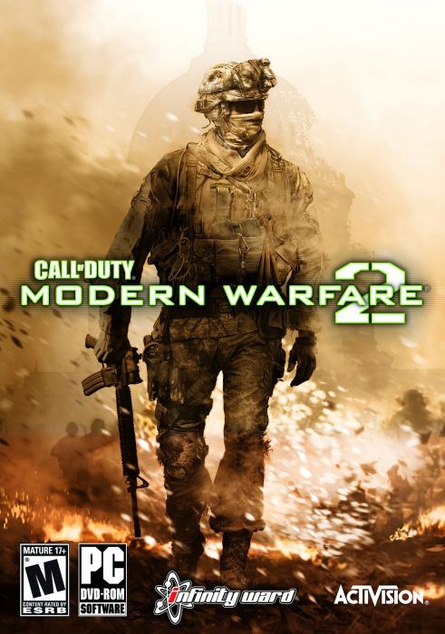

Call of Duty Modern Warfare 2 11.2 GB
Género: FPS
La historia del juego transcurre 5 años después de los eventos de Modern
Warfare, es decir, en el año 2016. Imran Zakhaev, el antagonista de la primera
parte de la trilogía de Modern Warfare, fue declarado héroe de la nueva Rusia
y se lo homenajeó con un monumento y poniéndole su nombre al Aeropuerto
Internacional de Moscú-Sheremétievo.